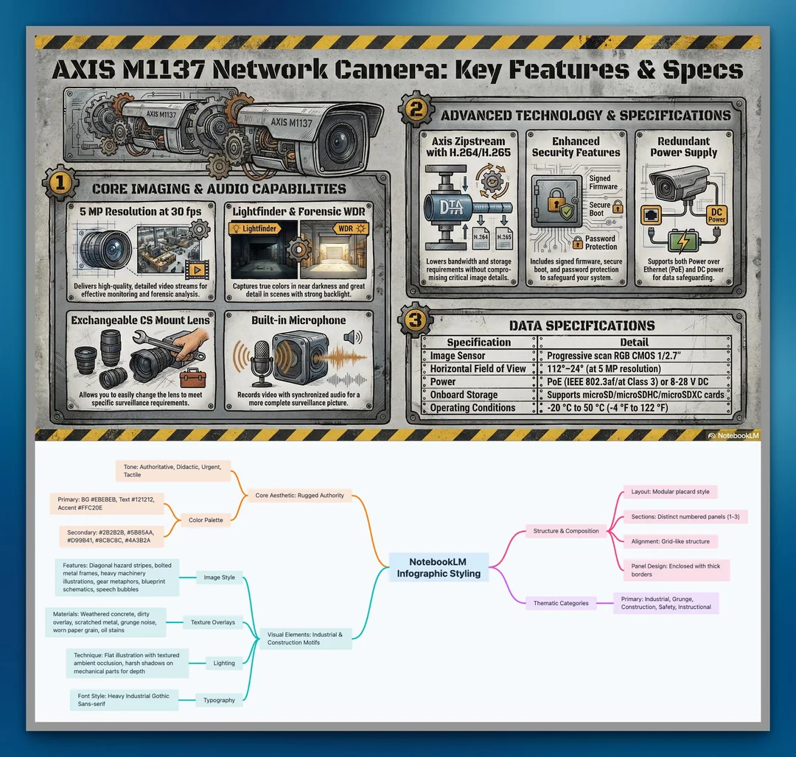

Learn
Anatomy of an Infographic
This page breaks down the core parts of a NotebookLM infographic style so you can understand what makes a visual language feel cohesive, repeatable, and distinctive.

Core Aesthetic
The style is built around rugged authority: a heavy-duty instructional board that feels industrial, tactile, and urgent rather than polished or corporate.
1. Color Palette
The palette defines the emotional temperature of the infographic and the hierarchy of attention.
- Background:
#EBEBEBcreates a worn concrete base. - Text:
#121212keeps labels bold and legible. - Accent:
#FFC20Eacts like a hazard-strip warning color. - Secondary Colors: dark greys, steel blue, rust orange, and dirty neutrals add industrial depth.
2. Image Style
This is where the visual personality becomes unmistakable.
- Heavy machinery illustrations and bolted metal panels imply durability.
- Gear metaphors and blueprint-style sketches connect technical detail to motion and systems.
- Speech bubbles and labeled placards make the image feel instructional rather than decorative.
3. Texture Overlays
Texture gives the piece physical credibility.
- Weathered concrete and scratched metal keep the layout from feeling flat.
- Grunge noise and worn paper grain suggest age, use, and authority.
- Oil stains and rough edges add a field-manual sensibility.
4. Lighting
Lighting controls how “real” and intense the visual feels.
- Mostly flat illustration lighting preserves diagram clarity.
- Ambient occlusion and harsh shadows on mechanical parts add depth without becoming photorealistic.
- The result feels rugged and instructional, not glossy or soft.
5. Typography
Typography reinforces the sense of authority.
- Headings: heavy industrial gothic sans-serif for impact.
- Body: medium-weight sans-serif for readable explanatory copy.
- Style: blocky, condensed, utilitarian, like stencil labels or warning signage.
6. Structure & Composition
The layout determines how the eye moves and how the information feels organized.
- Modular placard sections make the infographic feel like an engineered dashboard.
- Distinct numbered panels communicate sequence and hierarchy.
- Grid-like alignment and thick enclosed borders keep everything disciplined.
7. Iconography & Motifs
Recurring symbols turn a style from a one-off image into a recognizable system.
- Wrenches, gears, hard hats, excavators, and machine parts create thematic consistency.
- These motifs tell the viewer that the infographic belongs to construction, safety, and industrial instruction.
- The symbols are hand-drawn enough to feel tactile, but structured enough to remain readable.
8. Thematic Categories
The style lands best when the content matches the visual language.
- Primary Fits: industrial, grunge, construction, safety, instructional.
- It works well when the message needs urgency, durability, or rugged clarity.
- It is a poor fit for calm, luxury, or minimalist subjects because the tone is intentionally forceful.